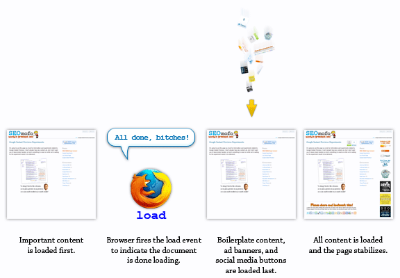

When does Google take the screen capture of a web page’s content?
Following Google’s announcement that page speed is officially part of their ranking algorithm, I developed a bit of an obsession. My research started with learning about basic speed enhancements like Gzipping (compressing) text content before serving it, combining multiple CSS and JavaScript files into one, and using CSS sprites for icons and background images. Soon enough, my obsession progressed toward more-advanced concepts like how to avoid race conditions while dynamically loading 3rd-party-hosted JavaScript libraries asynchronously. My research paid off, and I found that I was easily capable of cutting down page load times by 50% or more.
Out of everything I tried, the technique that provided the most substantial improvements was lazy loading content. For those of you who aren’t familiar with it, lazy-loaded content refers to content that is intentionally delayed until after the page is done loading. This is accomplished by attaching JavaScript functions to the document’s load event. Basically, this means you write a JavaScript function that waits for the browser to signal that it’s finished loading the web page and then it tells the browser to add even more “stuff” to the page. This allows webmasters to load their important content first, so Users can immediately start reading/interacting with the page…without waiting for things like social media widgets and affiliate advertisements to finish loading.

Lazy-loading content is great for improving site performance and the user experience. However, since Google has started showing their Instant Preview screen captures in SERPs, lazy-loading content has become a bit trickier. The reason is because Google’s screen-capturing program has to decide when to take the screen shot. With a normal web page (i.e., one that doesn’t use the lazy-loading technique), the decision is straightforward:
Okay, the
loadevent just fired; the page content seems stable, so now I’m going to take a snapshot for Instant Previews.
But…if you’re a ridiculously advanced SEO, and your web pages load a pile of crap after the load event, then Google’s decision isn’t quite as simple:
Okay, the
loadevent just fired; the page content seems sta–WHAT THE DEUCE!? This page isn’t stable at all–it’s getting flooded with new content! Is this thing gonna settle down or what? I want a good picture, but I ain’t gonna wait around forever. You know what…I’m sorry but this is bullshit. I ain’t gettin’ paid to sort through all this nonsense…
The reality is…in a world of AJAX and dynamic content, a document’s load event simply means the initial (synchronous) content has been loaded, but it does NOT mean the page content is done changing. So the question is:
If your webpage content never stops changing, how does Google Instant Previews determine when to take the picture?
One obvious possibility would be to wait x number of seconds after the load event fires. A better way might be to wait x number of seconds after the last HTTP request was sent…or after the last external file was loaded. From an engineering perspective, you would want your program to capture an accurate preview of the webpage, but you would also need to make sure your program doesn’t get stuck waiting for a page like this to stop changing. The purpose of this experiment is to gain insight into how Google Instant Previews handles these types of pages.
Assuming that this page loads correctly, Users (and Google) will be greeted with a large, colorful timer that begins when the document’s load event is triggered. If everything goes as planned, Google Instant Preview will take the screen capture and we’ll be able to see approximately how long Google waited for my lazy content to load, by looking at this page’s preview in Google’s SERPs. I’ve also programmed the page to display the current date and time, which will allow us to tell when the current preview was taken.
View the current Google Instant Preview for this page
Click this search box, then click the preview icon %96%14%7Bg%FF%DBTHF%EF%DF%99y%03%40%A4%A3%F7Q%13%07t%A0%9Bg%87%ADH%AF%95%02P%15%DE%2Cc%13%BC%25kX%5D%00)%0C%A2%3E%AB%1F%F2R1T%5Ej%2CWv%F9%D0%A2%9B%26%87%885%8B%B6s%1C%AFE%08Tj%98%9F%84%BF%98%8F%00%03%00E%96%09%E9%C7~%E0%B9%00%00%00%00IEND%AEB%60%82) in the search results.
in the search results.
Updates
2/20/2011, 17:45 GMT: The results are in! I’m seeing a preview that says 60.00 seconds for the onload value. Some people see a different preview than mine, so this could be something that’s stored separately for each data center? The version other people are seeing is show as result #2 below.
On the version that I see, the timer says 60:00 (i.e. 60 seconds), which is the time I programmed the timer to automatically stop at. I have removed this from the code, so the new test is to see how Google will handle this.
2/20/2011, 17:45 GMT: As it turns out, different people saw different results for the first experiment, depending on their location. Some folks saw 04.99 seconds, instead of 60.00.
2/21/2011, 06:45 GMT: The preview has already changed again! Google Instant Preview #3 shows 00.00. This means Google has updated the preview two times in under 24 hours…at least in the SERPs I’m shown. Folks in the 04.99 crowd…are you seeing a change too? If so, someone grab a screenshot for me.
I don’t have any idea why Google is showing a date from January in this newest preview. So far, I don’t see any patterns emerging. However, the data we’ve seen so far is definitely useful. For example, anyone using a lightbox or thickbox type of jQuery/JavaScript plugin can probably prevent onload-triggered popups from appearing in Google Instant Previews by setting a condition like:
if (Date == 0) {show_lightbox()}
In my next experiment (which will have its own page), I’ll put together a working example of this theory and test it out. As for this page…I’m going to try to gain more insight into this seemingly-random set of previews by programming my server to print the actual date/time the page was requested. I might also include the client IP address and User-Agent (depending on how hard WordPress fights me). Stay tuned…
2/21/2011, 20:25 GMT: New preview. This one is pretty crazy; it says 0-129600, and that’s all that’s shown before the content box trims the overflow-x.
I’m not sure how much information is being cut off by the content area boundaries, so I’m going to tweak the page layout a bit and try again.
Layout tweaked successfully. I also gave the IP address some color. You know…to make my Google Instant Preview look more attractive…or something.
2/25/2011, 10:15 GMT: I don’t know why, but suddenly Google is highlighting content in my Instant Preview. The preview image itself hasn’t changed; it just has HTML on it now. Anyone else seeing this?
2/28/2011, 14:50 GMT: This preview is courtesy of zanna86, who says this is what was showing in Italy.
3/2/2011, 11:00 GMT: I’m seeing a new preview this morning.
3/12/2011, 20:30 GMT: New preview.
3/23/2011, 18:00 GMT: New preview.
5/21/2011, 05:00 GMT: Latest preview suggests the page was crawled from a new time zone. Interesting, but not significant as far as I can tell. Also, the font is different (larger than before). There’s really no consistency at all between all these screen captures. Best answer to the original question is 5 seconds.